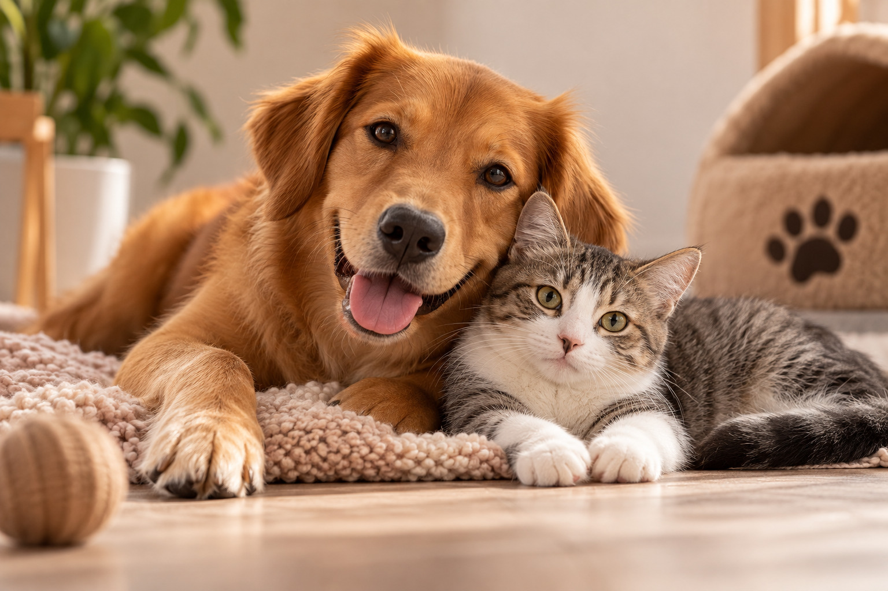

Encontre seu novo melhor amigo

A AUma Gêmea é uma plataforma criada para aproximar pessoas interessadas em adotar de animais que precisam de um novo lar.
Nosso objetivo é incentivar a adoção responsável, considerando as características e necessidades de cada animal para ajudar a encontrar uma família compatível.
Adoção responsável
Adotar é assumir um compromisso. Por isso, buscamos tornar esse processo mais consciente e facilitar a conexão entre adotantes e animais.
Por que adotar?
A adoção oferece uma nova oportunidade para animais que aguardam por uma família e contribui para reduzir o abandono e a superlotação das instituições.
Entre em contato
E-mail: contato@aumagemea.com.br
Telefone: (11) 99999-9999
Localização: São Paulo - SP